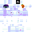

~*~ THE ETHEREAL PUMPKIN PHANTOM ~*~
★ MY EXCLUSIVE MINECRAFT SKIN ★ |
||
|---|---|---|
|
-- Raw Skin File --  Created: In the Ethereal Void
|
:: Skin Stats ::
:: Skin Lore ::Once a wandering traveler who got lost in a corrupted snowy biome, this entity was transformed by a glitched ender pearl and a cursed pumpkin. Now, composed of fragmented white and purple pixels, it floats across multiplayer servers. Legend has it that if you stare directly into its glowing green eyes, your game will mysteriously crash! "I carry the pumpkin not for harvest, but as a lantern to guide lost souls through the blocky void..." :: Favorite Activities ::
|
|

You are ghostly visitor number:
| << Previous Site | [ The Spooky Minecraft Webring ] Join the ring! |
Next Site >> |
| [ BEST VIEWED IN NETSCAPE NAVIGATOR 4.0 ] | [ RESOLUTION: 800x600 ] |
Copyright © 1999 Ethereal Entity. Do not steal my HTML!